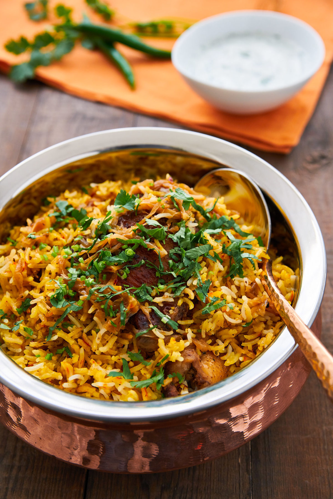

1.Chicken Biryani:

Chicken Biryani is a savory chicken and rice dish that includes layers of
chicken, rice, and aromatics that are steamed together. The bottom layer
of rice absorbs all the chicken juices as it cooks, giving it a tender
texture and rich flavor, while the top layer of rice turns out white and
fluffy. Buried in the Biryani, you’ll find whole cuts of succulent chicken
bursting with flavor from the potent array
of spices, herbs, and aromatics it’s marinated in.
For my Chicken Biryani recipe, I’ve simplified the preparation
a bit by marinating the chicken in a spicy mixture of garam masala,
garlic, ginger, chili peppers, coriander leaves, and garlic. When fried,
the spices and aromatics on the exterior of the chicken caramelize into
an insanely flavorful crust. I like to make the fried onions separately,
as it allows you to fully caramelize them into a sweet umami-packed layer
that contrasts the spicy, savory chicken. For the rice, a quick par-boil
with whole spices like cardamom, bay leaves, and cumin infuses some flavor,
while ensuring the rice is tender enough steam after the Biryani is assembled.
2.Chicken 65 :

Definitely spicy, but also full of strong flavours. The chicken
is crunchy on the outside and succulent on the inside. The marinade
makes sure each bite of chicken is a party in the mouth! Curry Leaves
add that fresh herby fragrance that I LOVE. You can’t skimp on those!
what cut of chicken should i use?
We recommend using boneless, skinless chicken thighs. They'll remain
juicy and can withstand the deep frying without getting dry or rubbery.
The chicken pieces should be bite sized, so cut small pieces, approximately
¾ inch in size. Small pieces will also fry faster..
A quick search on the internet will give you many bizarre explanations
about why this dish is called Chicken 65. Here's one that I think is logical
- Apparently, this dish was first made in a Chennai-based restaurant called
Hotel Buhari in 1965. It quickly gained popularity as a quick snack or munchies
and has become a party favourite all over the country! Do you have any theories
on why it's called Chicken 65? Tell me about it!